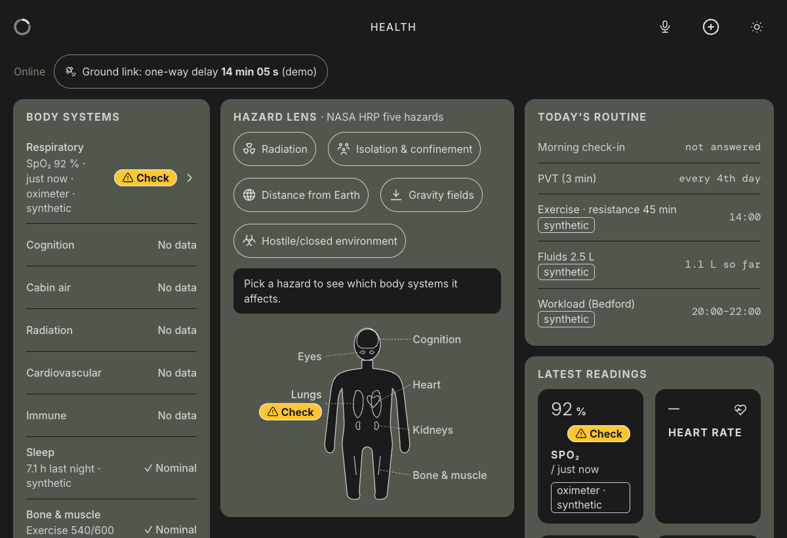

The app · home screen

Body systems
Grey when nominal. Colour only for an alert, always with an icon and a word.
Hazard lens
Pick one of NASA’s five hazards to see which body systems it affects.
Today’s routine
Prompts the checks crews already do: check-in and reaction test.
Crew Health Companion